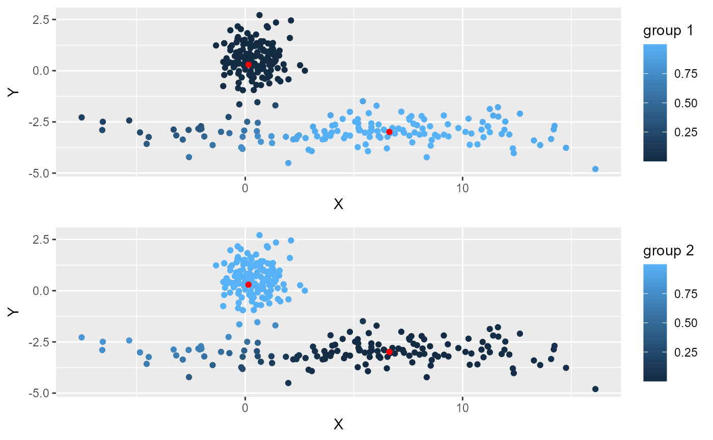

vignettes/web_vignettes/advanced_examples.Rmd
advanced_examples.RmdThis vignette gives some advanced examples with the package geocmeans. It is recommended to read the vignette introduction first.
It has been proposed to modify the SFCM algorithm to include “non-local spatial information” instead of the information provided by close observations (Zhao, Liu, and Fan 2015). Basically, this implies a modified spatial weighting scheme combining neighbouring and semantic distance. This way, more similar neighbours get more weights in the calculation of the lagged dataset which can be desirable in dataset characterized by a lot of noise. When working with a classical vector dataset, one can use the function adjustSpatialWeights and create a row-standardized weight matrix using the inverse of the euclidean distance between observation and their neighbours as weights.
library(geocmeans, quietly = TRUE)
library(sf, quietly = TRUE)
library(spdep, quietly = TRUE)
library(ggplot2, quietly = TRUE)
library(ggpubr, quietly = TRUE)
library(tmap, quietly = TRUE)
data(LyonIris)
AnalysisFields <-c("Lden","NO2","PM25","VegHautPrt","Pct0_14",
"Pct_65","Pct_Img","TxChom1564","Pct_brevet","NivVieMed")
Data <- st_drop_geometry(LyonIris[AnalysisFields])
# create the spatial weight matrix
Neighbours <- poly2nb(LyonIris,queen = TRUE)
WMat <- nb2listw(Neighbours,style="W",zero.policy = TRUE)
# create the modified weight matrix
WMat_adj <- adjustSpatialWeights(Data, WMat$neighbours, style = "W")
# calculate the modified version of FCM with non-local information
nl_SFCM <- SFCMeans(Data, WMat_adj, k = 4, m = 1.5, alpha = 0.7,
tol = 0.0001, standardize = FALSE,
verbose = FALSE, seed = 456)
# comparing with the standard SFCM
SFCM <- SFCMeans(Data, WMat, k = 4, m = 1.5, alpha = 0.7,
tol = 0.0001, standardize = FALSE,
verbose = FALSE, seed = 456)
# spatial consistency
consis_SFCM <- spConsistency(SFCM, WMat, nrep = 50)
consis_nl_SFCM <- spConsistency(nl_SFCM, WMat, nrep = 50)
# silhouette index
silh_SFCM <- calcSilhouetteIdx(SFCM$Data, SFCM$Belongings)
silh_nl_SFCM <- calcSilhouetteIdx(nl_SFCM$Data, nl_SFCM$Belongings)
# explained inertia
inert_SFCM <- calcexplainedInertia(SFCM$Data, SFCM$Belongings)
inert_nl_SFCM <- calcexplainedInertia(nl_SFCM$Data, nl_SFCM$Belongings)
df <- data.frame(
algorithm = c("SFCM", "nlSFCM"),
silhouette = round(c(silh_SFCM, silh_nl_SFCM),3),
spatial_cons = round(c(consis_SFCM$Median, consis_nl_SFCM$Median),3),
inertia = round(c(inert_SFCM, inert_nl_SFCM),3)
)
knitr::kable(df)| algorithm | silhouette | spatial_cons | inertia |
|---|---|---|---|
| SFCM | 0.650 | 0.412 | 0.787 |
| nlSFCM | 0.326 | 0.336 | 0.564 |
We can see here that the SFCM with non-local information yield results with a better spatial consistency, a better silhouette index but a lower explained inertia.
It is possible to obtain a “robust” version of the FCM algorithm by normalizing the calculated distances between the centres of the groups and the observations by the spread of the centres (Tsai and Lin 2011). With this modification, the algorithm can find clusters with different densities.
We illustrate this with a simple example, let us consider the following dataset with two clusters.
The first cluster is a sphere and the second is spread along the Y axis. If we use the classical FCM algorthim , we end up with the following fuzzy partition.
# preparing the functions to scale and unscale the data
data_scales <- standardizer(df)
# classical fuzzy cmeans
result1 <- CMeans(df, 2, 1.5, standardize = TRUE, robust = FALSE, verbose = FALSE, seed = 176)
# plotting the membership matrix
plots <- lapply(1:2, function(i){
df2 <- df
df2$proba <- result1$Belongings[,i]
df3 <- data.frame(result1$Centers)
names(df3) <- c("X","Y")
df3$X <- data_scales$X$unscale(df3$X)
df3$Y <- data_scales$Y$unscale(df3$Y)
myplot <- ggplot(df2) +
geom_point(aes(x = X, y = Y, color = proba)) +
geom_point(data = df3, mapping = aes(x = X, y = Y), color = "red") +
labs(color = paste0("group ",i))
return(myplot)
})
ggarrange(plotlist = plots, ncol = 1, nrow = 2)
One can see that several points are not attributed to the right cluster on the left of the picture. This is because they are closer to the first cluster. This can be corrected if we normalize the distances to the two clusters (robust FCM).
# robust fuzzy cmeans
result2 <- CMeans(df, 2, 1.5, standardize = TRUE, robust = TRUE, verbose = FALSE, seed = 176)
# plotting the membership matrix
plots <- lapply(1:2, function(i){
df2 <- df
df2$proba <- result2$Belongings[,i]
df3 <- data.frame(result2$Centers)
names(df3) <- c("X","Y")
df3$X <- data_scales$X$unscale(df3$X)
df3$Y <- data_scales$Y$unscale(df3$Y)
myplot <- ggplot(df2) +
geom_point(aes(x = X, y = Y, color = proba)) +
geom_point(data = df3, mapping = aes(x = X, y = Y), color = "red") +
labs(color = paste0("group ",i))
return(myplot)
})
ggarrange(plotlist = plots, ncol = 1, nrow = 2)The normalization is available for FCM, SFCM, GFCM and SFGCM. when applied to SFCM or SGFCM, the normalization is applied separately for the spatial and the non spatial data.
FCM algorithm can be sensitive to noise. Outliers and noise points will affect the centre of the clusters and the final membership matrix. One method to limit their effects is too add a noise cluster to the method. Each observation is at the same distance to this cluster. This distance must be set by the user and is written \(\delta\). Several distances could be used to check the quality of the clustering. We just illustrate here how the parameter works. Let us consider the same dataset, but with more noise.
result3 <- CMeans(df, 2, 1.5, standardize = TRUE, verbose = FALSE,
robust = TRUE,
noise_cluster = TRUE, delta = 0.5,
seed = 176)
df2 <- df
df2$proba <- result3$noise_cluster
ggplot(df2) +
geom_point(aes(x = X, y = Y, color = proba)) +
labs(color = "noise cluster")We can see here that delta is too low because most of the points belong to the noise cluster. We will incrase the value of delta.
result3 <- CMeans(df, 2, 1.5, standardize = TRUE, verbose = FALSE,
robust = TRUE,
noise_cluster = TRUE, delta = 10,
seed = 176)
df2 <- df
df2$proba <- result3$noise_cluster
ggplot(df2) +
geom_point(aes(x = X, y = Y, color = proba)) +
labs(color = "noise cluster")Here delta is likely to small, even the points at the edge of the dataset have a weak membership value to the noise cluster.
result3 <- CMeans(df, 2, 1.5, standardize = TRUE, verbose = FALSE,
robust = TRUE,
noise_cluster = TRUE, delta = 3,
seed = 176)
U <- result3$Belongings
U <- cbind(U,result3$noise_cluster)
df2 <- df
df2$proba <- result3$noise_cluster
# plotting the membership matrix
plots <- lapply(1:3, function(i){
df2 <- df
df2$proba <- U[,i]
myplot <- ggplot(df2) +
geom_point(aes(x = X, y = Y, color = proba))
labs(color = paste0("group ",i))
return(myplot)
})
ggarrange(plotlist = plots, ncol = 2, nrow = 2,
common.legend = TRUE, legend="bottom")Here delta gives a better results and the noise points are well identified.
Note that the noise cluster does not have a centre. It should not be considered as a well defined cluster, but as a group of outliers.